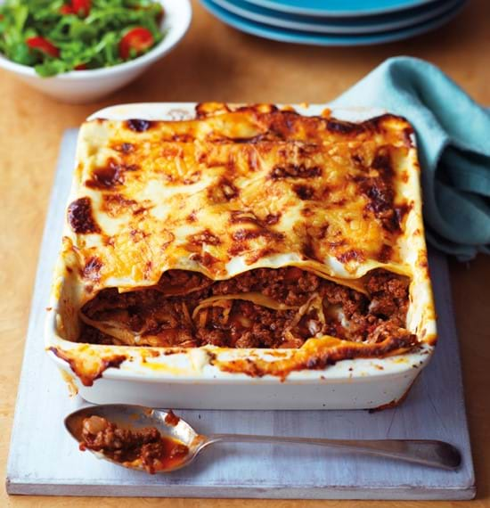

Beef Lasagne Recipe

Lasagne, an Italian family favourite
Ingredients
- 1 x 250g pack fresh lasagne sheets
- 450g lean beef mince
- 50g pancetta cubes or streaky bacon, finely chopped
- 50g chicken livers, roughly chopped
- 1 red onion, peeled and chopped
- 2 large garlic cloves, peeled and crushed
- 1 celery stick, finely chopped
- 1 carrot, peeled and finely chopped
- 1 small sprig fresh thyme
- 1 x 400g can chopped tomatoes
- 300ml good, hot beef stock
- 1 teaspoon caster sugar
- 2 tablespoons tomato purée
- 100ml good red wine
- 1 bay leaf
- 2 tablespoons chopped flat-leaf parsley
- 1 teaspoon freshly grated nutmeg
For the béchamel sauce
- 25g butter
- 25g plain flour
- 425ml milk
- 75g grated hard cheese, e.g Cheddar
- 25g Parmesan cheese, grated
Directions
-
Heat a large non-stick pan and dry fry the mince with the pancetta and chicken livers for 3-4 minutes until brown,
breaking up any lumps with the back of a spoon. Transfer to a large bowl.
Pan fry the onion, garlic, celery and carrot in the same frying pan for 2-3 minutes.
-
Add the remaining ragù ingredients, bring to the boil, reduce the heat,
cover and simmer for 1 hour, stirring occasionally. Remove the bay leaf and thyme sprig.
-
Meanwhile, to make the cheese sauce; heat the butter in a non-stick pan until foaming and separately pre-heat the milk.
Remove the pan from the heat and whisk in the flour. Then slowly add the milk,
return to the heat and cook until thickened, stirring continuously. Add the cheese and season if required.
-
Preheat the oven to 190°C, 170°C Fan, Gas Mark 5. Place a layer of lasagne sheets in the base of a 25cm square ovenproof dish.
Spoon half the ragù mixture over the pasta, then half the cheese sauce.
Repeat with another layer of lasagne and ragù, then finish with a final layer of lasagne sheets and sauce. Sprinkle the Parmesan cheese.
-
Bake in the oven for 30 minutes and serve with a mixed salad and garlic bread.
References
______________________________________________________________________________________________
Back to top
Homepage
Previous Recipe
Next Recipe